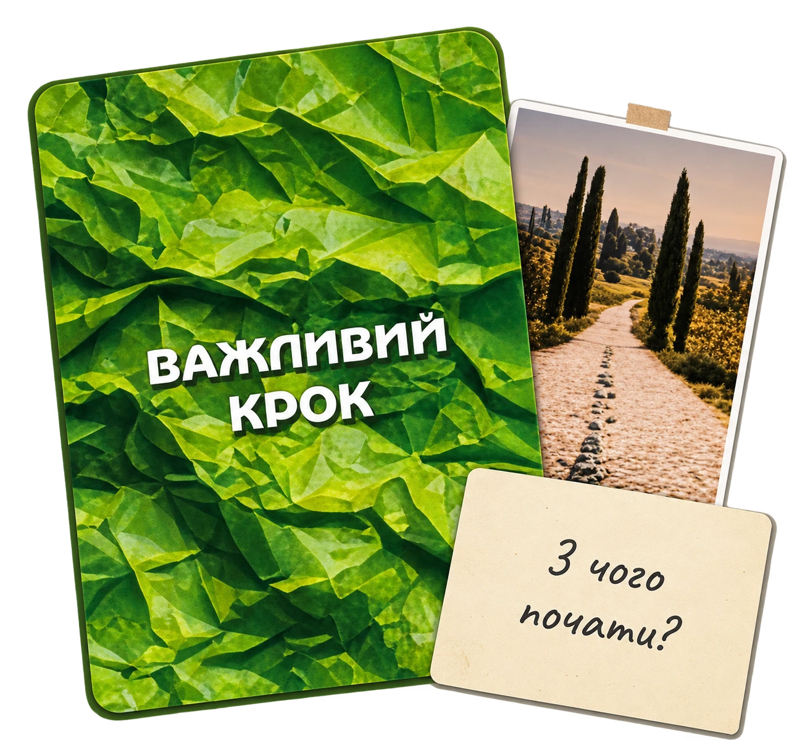

МРІЇ
МРІЇ
Згадаєш, чого насправді хочеш, і визначиш бажання, якому готова дати шанс.
ІНТЕРАКТИВНА ЖІНОЧА ПОДІЯ · ТРЕНІНГ · АВТОРСЬКА ГРА
Від мрії до дії.
Від «колись буде» до «я вже роблю».
Один день, щоб згадати, чого ти насправді хочеш, побачити, що тебе зупиняє, і визначити свій наступний крок.
На тебе чекають практики з авторською грою, нові знайомства, особисті відкриття та атмосфера, у якій можна нарешті зосередитися на собі.
ТРЕНІНГ ДЛЯ ТЕБЕ ЯКЩО ТИ:
Не що потрібно іншим, не що треба встигнути, а чого насправді
хочеться тобі?
Можливо, ти впізнаєш себе в одному з цих пунктів:
Постійно відкладаєш власні бажання на потім.
Відчуваєш, що серед щоденних справ загубила себе та свої мрії.
Хочеш змін у житті, роботі чи власній справі, але не знаєш, із чого почати.
Розумієш, що можеш більше, але щось досі не дозволяє тобі зробити перший крок.
ТРЕНІНГ БІЛЬШЕ, НІЖ ПРОСТО ЗУСТРІЧ
«Заведи своє життя» — інтерактивний тренінг, для жінок, які хочуть не просто говорити про зміни, а почати рухатися до них.
Протягом дня ти пройдеш три рівні роботи із собою:
МРІЇ - згадаєш, чого насправді хочеш, і обереш бажання, якому готова приділити увагу.
ДІЇ - побачиш, що тебе зупиняє, які ресурси вже маєш і що можеш змінити.
ВАЖЛИВИЙ КРОК - визначиш конкретну дію, яку готова зробити протягом наступних семи днів.
На тебе чекають особиста історія Юлії, театральний сюрприз, робота з авторською грою, практики, щирі розмови та нові знайомства.
Ти не мусиш змінити все за один день. Але можеш вийти з нього з розумінням, із чого почати.
ХОЧУ БУТИ ТАМТРИ КРОКИ · ОДИН РЕЗУЛЬТАТ
Пройди шлях від власної мрії до конкретного рішення за допомогою авторської гри Юлії Ублінських.
Згадаєш, чого насправді хочеш, і визначиш бажання, якому готова дати шанс.
Побачиш, що тебе зупиняє, які ресурси маєш і що допоможе рухатися вперед.
Обираєш конкретну дію, визначаєш термін і складаєш свій перший план на найближчі 7 днів.
ПРОГРАМА / 30 СІЧНЯ 2027
Історія, що торкнеться тебе. Запитання, які змусять подивитися на себе по-новому.
Гра, що допоможе знайти важливі відповіді. Знайомства, щирі розмови та емоції, які захочеться забрати із собою.
І фінал, який стане красивою крапкою цього дня.
30 січня. Твоя історія починається тут.
ЯК ВЛАШТОВАНА ГРА
Авторська гра «Важливий крок» побудована як послідовний шлях: від усвідомлення власних бажань до конкретного рішення та дії.
Чого я насправді хочу?
Допомагає почути власні бажання, відокремити їх від чужих очікувань і зрозуміти, чого тобі справді хочеться.
Що я можу зробити вже зараз?
Допомагає побачити свої ресурси, можливості й перешкоди, а також знайти реальні способи рухатися до бажаного.

З чого я почну?
Допомагає поєднати бажання з конкретними діями, обрати свій наступний крок і визначити, що ти зробиш протягом найближчих 7 днів.
ЩИРІ СЛОВА / ДОСВІД УЧАСНИКІВ
Реальні враження людей від авторських ігор Юлії. Кожна історія — своя.
Побачити своїми очима, як працює авторська гра «Важливий крок». Відчути її атмосферу, познайомитися з Юлією та дізнатися більше про подію «Заведи своє життя».
Я запрошую тебе на безоплатну екскурсію у світ гри - невелику зустріч-знайомство, після якої ти зможеш відчути, чи відгукується тобі цей формат.
Побачити. Відчути. Познайомитися.
ХОЧУ НА БЕЗКОШТОВНУ ЕКСКУРСІЮЄ ЗАПИТАННЯ?
Усе, що хочеться знати перед тим, як подарувати собі цей день.
30 січня 2027 року в Києві, в офлайн-форматі. Точну адресу та організаційні деталі повідомимо учасницям після придбання квитка.
Для жінок, які хочуть приділити час собі, згадати про власні бажання, відчути натхнення та познайомитися з новими людьми. Неважливо, чи маєш ти готовий план змін. Достатньо бажання провести цей день по-новому.
Театральний сюрприз, особиста історія Юлії, знайомство з авторською грою «Важливий крок», три інтерактивні етапи тренінгу, жіноче коло, нові знайомства та святковий фінал.
Ні, спеціальна підготовка не потрібна. Не потрібно мати готовий запит, план змін чи досвід участі в іграх. Просто приходь відкритою до нових вражень.
Так! Ти можеш прийти сама або разом із подругою. На події буде простір для легкого спілкування, нових знайомств і щирих розмов. Можливо, саме тут ти зустрінеш близьких за духом людей.
День для себе, нові знайомства, натхнення та можливість подивитися на власні бажання по-новому. Ти визначиш важливий для себе крок і сформуєш план дій на найближчі 7 днів.
Продаж квитків відкриється незабаром. Слідкуй за оновленнями на сайті та в соціальних мережах Юлії. Після старту продажів тут з’явиться можливість придбати квиток.
ЦЕ МОЖЕ БУТИ ТВОЇМ ВАЖЛИВИМ КРОКОМ
Дозволь собі один день, який буде тільки про тебе. Про емоції, нові знайомства й бажання жити своє життя.
Придбати квиток